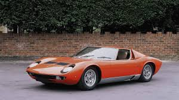
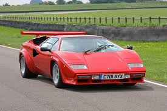
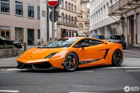
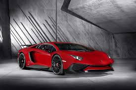
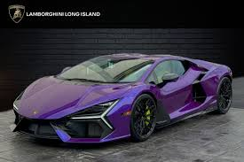

→ Aggressive, sharp-edged design
→ Powerful V10 and V12 engines
→ Lightweight carbon-fiber construction
→ Advanced aerodynamics
→ Signature scissor doors (on certain models)
Every Lamborghini is built to deliver extreme speed, loud engine sound, and a thrilling driving experience.→ Lamborghini Miura – the world’s first true supercar
→ Countach – famous for its futuristic look
→ Diablo – extreme performance

→ Gallardo – one of the best-selling models
→ Aventador – powerful V12 flagship
→ Huracán – modern performance icon

→ Revuelto – the new hybrid V12 revolution
Each model reflects Lamborghini’s commitment to power, art, and innovation.
Even though Lamborghini does not heavily focus on Formula 1, its GT racing cars and special editions are engineered with race-level technology. Their vehicles are built for:
→ High-speed handling
→ Lightning-fast acceleration
→ Maximum stability and control
Lamborghini stands as a symbol of pure, uncompromised performance.
Located in Sant’Agata Bolognese, Italy, the Lamborghini Museum offers visitors a deep dive into the brand’s history and future.
Inside the museum, visitors can explore:→ The earliest Lamborghini models
→ Rare prototypes and concept cars
→ V12 and V10 engines
→ Special editions and limited-series hypercars
→ Interactive exhibits on design and production
→ Historic achievements and racing heritage
The museum also displays how each car is crafted, combining advanced technology with handmade Italian precision.
→ Hybrid supercars
→ Lightweight materials
→ Sustainable high-performance engines
The brand continues to push the boundaries of what a supercar can be, blending tradition with modern technology.